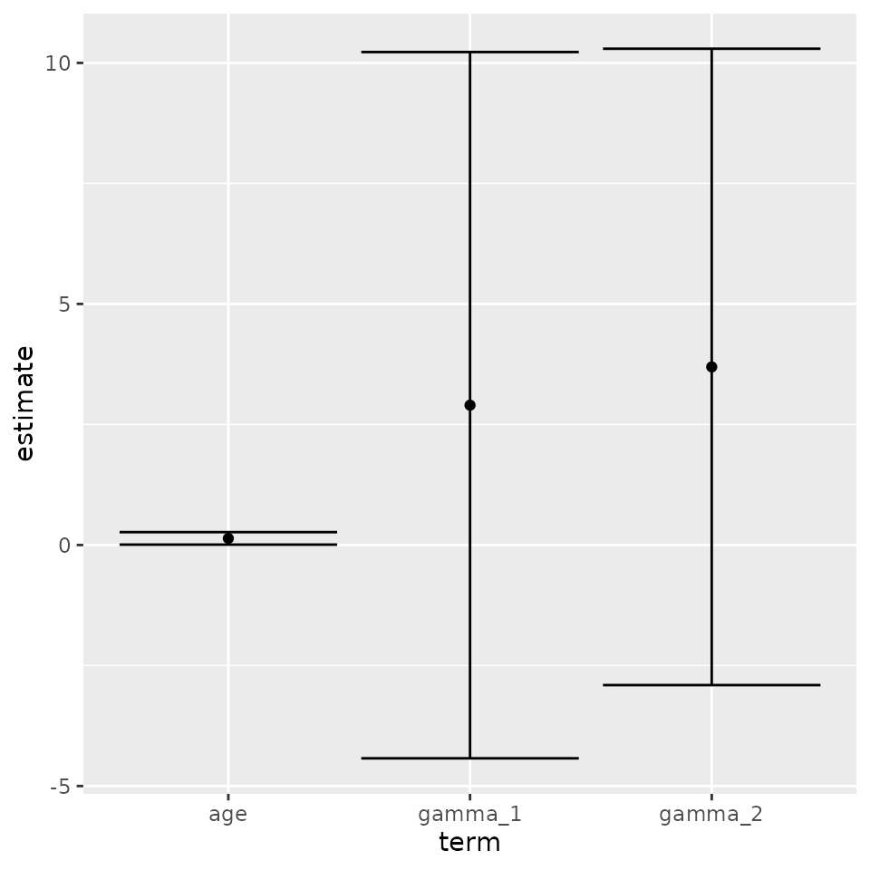
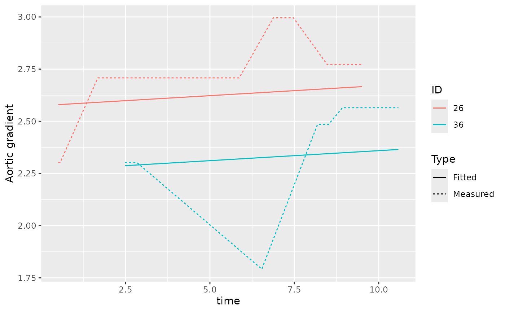

joineRML and the broom package
Alessandro Gasparini
2026-06-13
Source:vignettes/joineRML-tidy.Rmd
joineRML-tidy.RmdIntroduction
Tidiers for objects of class mjoint have been included
in latest release of joineRML package (0.4.5).
The purpose of these tidiers are described in the introductory
vignette to broom:
The broom package takes the messy output of built-in functions in R, such as
lm,nls, ort.test, and turns them into tidy data frames.
There are three distinct tidiers included with
broom:
tidy: constructs a data frame that summarises the model estimates;augment: add columns to the original data that was modeled;glance: construct a concise one-row summary of the model.
These methods are specifically useful when plotting results of a joint model or when comparing several models (e.g. in terms of fit).
Example
We use the sample example from the introductory vignette to
joineRML using the heart valve data.
We analyse only the records with case-complete data for heart valve
gradient (grad) and left ventricular mass index
(lvmi):
Further to that, we only select the first 50 individuals to speed up these examples:
hvd <- hvd[hvd$num <= 50, ]
set.seed(12345)
fit <- mjoint(
formLongFixed = list(
"grad" = log.grad ~ time + sex + hs,
"lvmi" = log.lvmi ~ time + sex
),
formLongRandom = list(
"grad" = ~ 1 | num,
"lvmi" = ~ time | num
),
formSurv = Surv(fuyrs, status) ~ age,
data = list(hvd, hvd),
timeVar = "time"
)## Running multivariate LMM EM algorithm to establish initial parameters...## Finished multivariate LMM EM algorithm...## EM algorithm has converged!## Calculating post model fit statistics...
tidy method
The tidy method returns a tidy dataset with model
estimates.
tidy(fit)## # A tibble: 3 × 5
## term estimate std.error statistic p.value
## <chr> <dbl> <dbl> <dbl> <dbl>
## 1 age 0.137 0.0661 2.07 0.0382
## 2 gamma_1 2.90 3.74 0.776 0.438
## 3 gamma_2 3.69 3.37 1.10 0.273By default the tidy method returns the estimated
coefficients for the survival component of the joint model; however, it
is possible to extract each component by setting the
component argument:
tidy(fit, component = "longitudinal")## # A tibble: 7 × 5
## term estimate std.error statistic p.value
## <chr> <dbl> <dbl> <dbl> <dbl>
## 1 (Intercept)_1 2.52 0.163 15.4 1.07e-53
## 2 time_1 0.00959 0.0310 0.309 7.57e- 1
## 3 sex_1 0.0336 0.230 0.146 8.84e- 1
## 4 hsStentless valve_1 0.0823 0.198 0.416 6.77e- 1
## 5 (Intercept)_2 4.99 0.0829 60.2 0
## 6 time_2 0.0260 0.0129 2.02 4.36e- 2
## 7 sex_2 -0.197 0.209 -0.941 3.47e- 1It is also possible to require confidence intervals to be calculated
by setting conf.int = TRUE, and modify the confidence level
by setting the conf.level argument:
tidy(fit, ci = TRUE)## # A tibble: 3 × 5
## term estimate std.error statistic p.value
## <chr> <dbl> <dbl> <dbl> <dbl>
## 1 age 0.137 0.0661 2.07 0.0382
## 2 gamma_1 2.90 3.74 0.776 0.438
## 3 gamma_2 3.69 3.37 1.10 0.273
tidy(fit, ci = TRUE, conf.level = 0.99)## # A tibble: 3 × 5
## term estimate std.error statistic p.value
## <chr> <dbl> <dbl> <dbl> <dbl>
## 1 age 0.137 0.0661 2.07 0.0382
## 2 gamma_1 2.90 3.74 0.776 0.438
## 3 gamma_2 3.69 3.37 1.10 0.273The standard errors reported by default are based on the empirical
information matrix, as in mjoint. It is of course possible
to use bootstrapped standard errors as follows:
bSE <- bootSE(fit,
nboot = 100,
safe.boot = TRUE,
progress = FALSE,
ncores = 1L)
tidy(fit, boot_se = bSE, conf.int = TRUE)The results of this example are not included as it would take too long to run for CRAN.
The tidy method is useful for custom plotting
(e.g. forest plots) of results from joineRML models, all in
a tidy framework:
library(ggplot2)
out <- tidy(fit, conf.int = TRUE)
ggplot(out, aes(x = term, y = estimate, ymin = conf.low, ymax = conf.high)) +
geom_point() +
geom_errorbar()
augment method
The augment method returns a dataset with added
predictions from the joint model. In particular, population-level and
individual-level fitted values and residuals are added to the data frame
returned by the method:
preds <- augment(fit)
head(preds[, c("num", "log.grad", ".fitted_grad_0", ".fitted_grad_1", ".resid_grad_0", ".resid_grad_1")])## # A tibble: 6 × 6
## num log.grad .fitted_grad_0 .fitted_grad_1 .resid_grad_0 .resid_grad_1
## <fct> <dbl> <dbl> <dbl> <dbl> <dbl>
## 1 1 2.30 2.60 2.42 -0.301 -0.114
## 2 1 2.30 2.64 2.45 -0.337 -0.149
## 3 1 2.30 2.65 2.46 -0.346 -0.158
## 4 2 2.64 2.58 2.45 0.0563 0.188
## 5 2 2.20 2.59 2.46 -0.394 -0.263
## 6 2 2.48 2.60 2.47 -0.116 0.0152
head(preds[, c("num", "log.lvmi", ".fitted_lvmi_0", ".fitted_lvmi_1", ".resid_lvmi_0", ".resid_lvmi_1")])## # A tibble: 6 × 6
## num log.lvmi .fitted_lvmi_0 .fitted_lvmi_1 .resid_lvmi_0 .resid_lvmi_1
## <fct> <dbl> <dbl> <dbl> <dbl> <dbl>
## 1 1 4.78 4.99 4.75 -0.213 0.0298
## 2 1 4.78 5.09 4.87 -0.308 -0.0869
## 3 1 4.92 5.11 4.90 -0.189 0.0265
## 4 2 4.74 5.16 4.83 -0.413 -0.0827
## 5 2 4.70 5.18 4.86 -0.483 -0.157
## 6 2 5.06 5.21 4.89 -0.149 0.174We can plot the resulting predictions for four distinct individuals:
out <- preds[preds$num %in% c(26, 36, 227, 244), ]
ggplot(out, aes(x = time, colour = num)) +
geom_line(aes(y = log.grad, linetype = "Measured")) +
geom_line(aes(y = .fitted_grad_1, linetype = "Fitted")) +
labs(linetype = "Type", colour = "ID", y = "Aortic gradient")
glance method
The glance method allows extracting summary statistics
from the joint model:
glance(fit)## # A tibble: 1 × 5
## sigma2_1 sigma2_2 AIC BIC logLik
## <dbl> <dbl> <dbl> <dbl> <dbl>
## 1 0.517 0.158 342. 374. -153.This allows comparing competing models easily. Say for instance that we fit a second model with only random intercepts:
set.seed(67890)
fit2 <- mjoint(
formLongFixed = list(
"grad" = log.grad ~ time + sex + hs,
"lvmi" = log.lvmi ~ time + sex
),
formLongRandom = list(
"grad" = ~ 1 | num,
"lvmi" = ~ 1 | num
),
formSurv = Surv(fuyrs, status) ~ age,
data = list(hvd, hvd),
timeVar = "time"
)## Running multivariate LMM EM algorithm to establish initial parameters...## Finished multivariate LMM EM algorithm...## EM algorithm has converged!## Calculating post model fit statistics...We can go ahead and compare the models in terms of AIC and BIC:
glance(fit)## # A tibble: 1 × 5
## sigma2_1 sigma2_2 AIC BIC logLik
## <dbl> <dbl> <dbl> <dbl> <dbl>
## 1 0.517 0.158 342. 374. -153.
glance(fit2)## # A tibble: 1 × 5
## sigma2_1 sigma2_2 AIC BIC logLik
## <dbl> <dbl> <dbl> <dbl> <dbl>
## 1 0.516 0.173 342. 369. -156.Additional examples
Several examples of how to use broom including more
details are available on its introductory vignette:
vignette(topic = "broom", package = "broom")